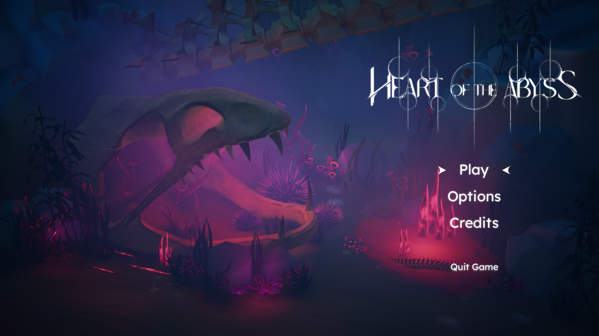
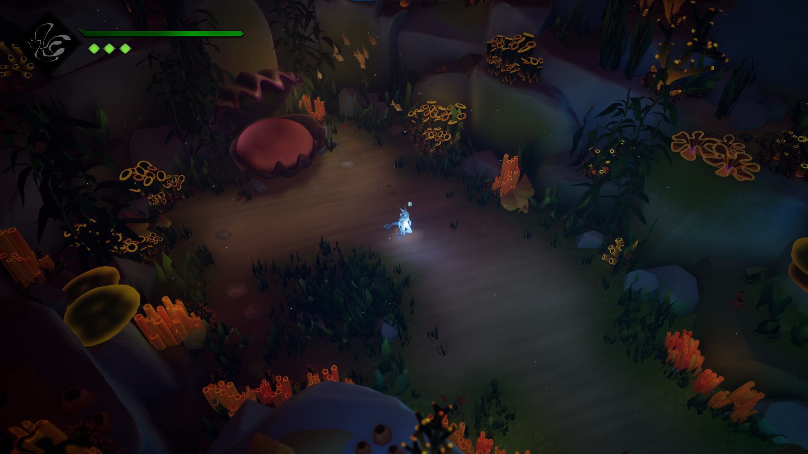
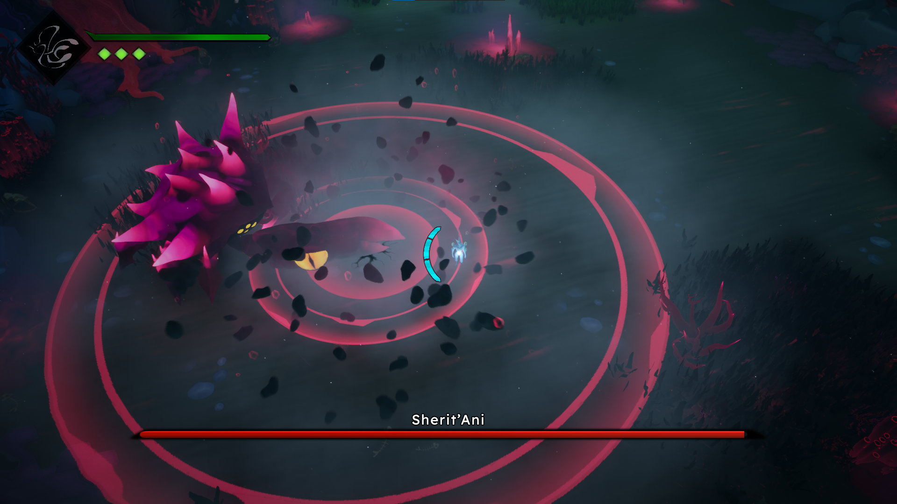
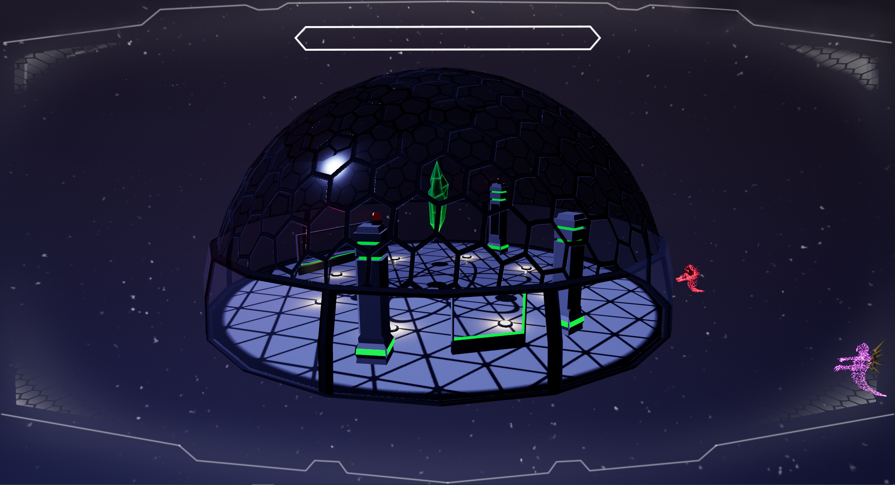
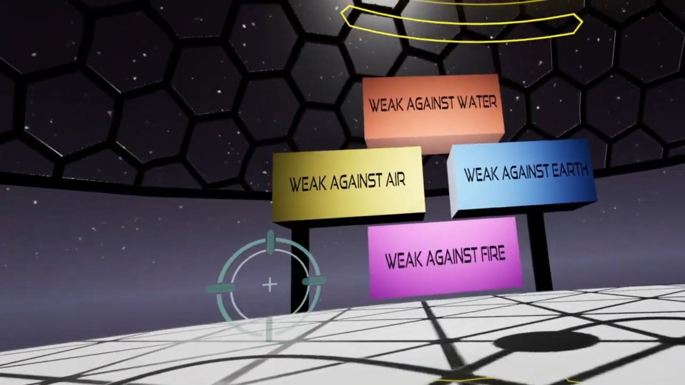
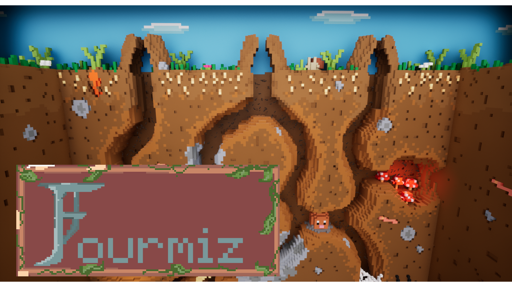
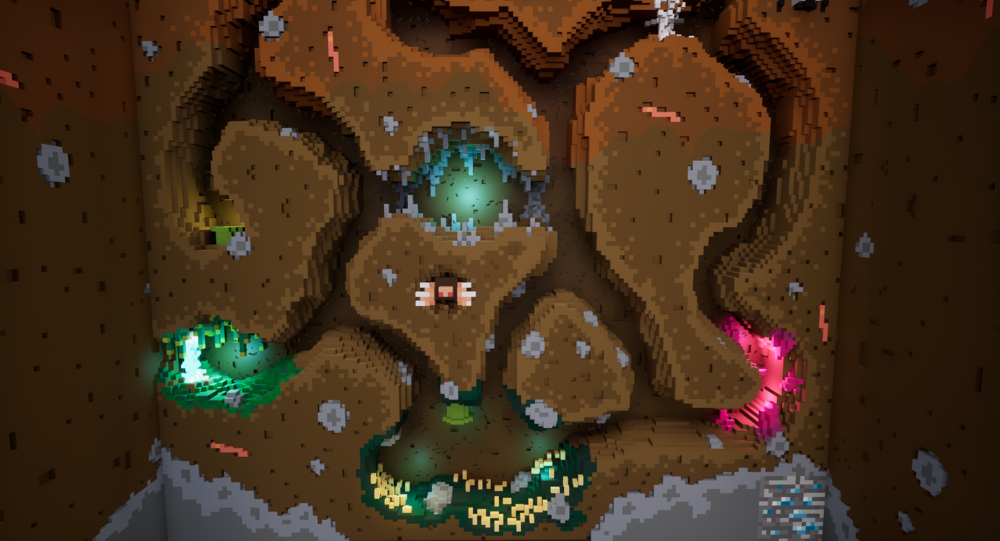

Heart of the Abyss (HOTA) is my final-year project. Developed by a team of seven, we worked on this project for 10 months.
HOTA is a game in which the player takes on the role of the SeaWatcher, guardian of the oceans, tasked with fighting a corruption consuming the abyss. I handled all the programming, including gameplay, tools, UI, and the AI for the game’s boss.
Game is ready to get download on Steam
  Overcracked is a game created for Gacha 2022. Developed with a team of 10 complete strangers, I was responsible for all integration, including animation, sound, special effects, meshes, and creating Blueprints related to the meshes.
The game is a local multiplayer title developed in Unreal Engine 5, where two players take on the roles of kangaroos who must produce drugs in their van, in a style similar to Overcooked.


Mangroot is a game created for the 2023 Global Game Jam. It marks my fourth participation in the Global Game Jam. The theme was “Roots.” We decided to make a local split-screen versus multiplayer game where the player controls a firefly and must defeat their opponent.
The game was developed in Unreal Engine 5, and I handled all the gameplay programming.


Akasha is a game created during a Game Jam involving first-, second-, and third-year students at ESMA.
This was my first experience with VR, so during the jam I spent time familiarizing myself with the system and implementing the gameplay-related mechanics.
Game can be play using a VR headset
 Fourmiz is a game created for the ESMA Inter-School Game Jam.
For this project, we used Unreal’s voxel plugin to achieve a strong artistic direction with consistent visuals. It is a sandbox game where the player must destroy an anthill using bombs. A full achievement system is implemented based on the elements the player destroys.
Link going directly on Itch.io
 